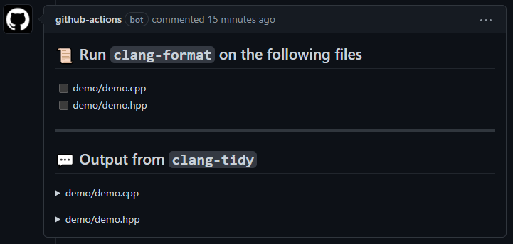
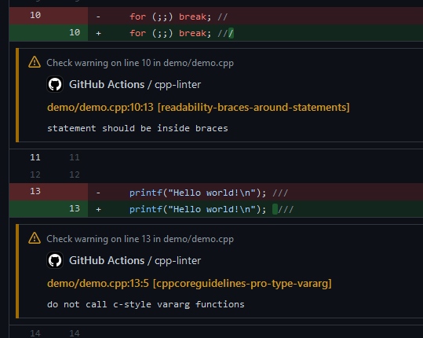

C/C++ Lint Action | clang-format & clang-tidy¶


A Github Action for linting C/C++ code integrating clang-tidy and clang-format to collect feedback provided in the form of thread comments and/or annotations.
Usage¶
Create a new GitHub Actions workflow in your project, e.g. at .github/workflows/cpp-linter.yml
The content of the file should be in the following format.
# Workflow syntax:
# https://help.github.com/en/articles/workflow-syntax-for-github-actions
name: cpp-linter
on:
push:
paths-ignore: "docs/**"
pull_request:
paths-ignore: "docs/**"
jobs:
cpp-linter:
runs-on: ubuntu-latest
steps:
- uses: actions/checkout@v2
- uses: shenxianpeng/cpp-linter-action@master
id: linter
env:
GITHUB_TOKEN: ${{ secrets.GITHUB_TOKEN }}
with:
style: file
- name: Fail fast?!
if: steps.linter.outputs.checks-failed > 0
run: |
echo "Some files failed the linting checks!"
# for actual deployment
# run: exit 1
Optional Inputs¶
style¶
- Description: The style rules to use. Set this to 'file' to have clang-format use the closest relative .clang-format file.
- Default: 'llvm'
extensions¶
- Description: The file extensions to run the action against. This is a comma-separated string.
- Default: 'c,h,C,H,cpp,hpp,cc,hh,c++,h++,cxx,hxx'
tidy-checks¶
- Description: Comma-separated list of globs with optional '-' prefix. Globs are processed in order of appearance in the list. Globs without '-' prefix add checks with matching names to the set, globs with the '-' prefix remove checks with matching names from the set of enabled checks. This option's value is appended to the value of the 'Checks' option in a .clang-tidy file (if any).
- It is possible to disable clang-tidy entirely by setting this option to '-*'. This allows using only clang-format to lint your source files.
- Default: 'boost-*,bugprone-*,performance-*,readability-*,portability-*,modernize-*,clang-analyzer-*,cppcoreguidelines-*'
repo-root¶
- Description: The relative path to the repository root directory. This path is relative to the path designated as the runner's GITHUB_WORKSPACE environment variable.
- Default: '.'
version¶
- Description: The desired version of the clang tools to use. Accepted options are strings which can be 6.0, 7, 8, 9, 10, 11, or 12.
- Default: '10'
verbosity¶
- Description: This controls the action's verbosity in the workflow's logs. Supported options are defined by the python logging library's log levels. This option does not affect the verbosity of resulting comments or annotations.
- Default: '10'
lines-changed-only¶
- Description: Set this option to true to only analyse changes in the event's diff.
- Default: false
files-changed-only¶
- Description: Set this option to false to analyse any source files in the repo.
- Default: true
ignore¶
- Description: Set this option with string of path(s) to ignore.
- In the case of multiple paths, you can use a pipe character ('|') to separate the multiple paths. Multiple lines are forbidden as an input to this option; it must be a single string.
- This can also have files, but the file's relative path has to be specified as well.
- There is no need to use './' for each entry; a blank string ('') represents
the repo-root path (specified by the
repo-rootinput option). - Submodules are automatically ignored. Hidden directories (beginning with a '.') are also ignored automatically.
- Prefix a path with a bang ('!') to make it explicitly not ignored - order of multiple paths does not take precedence. The '!' prefix can be applied to a submodule's path (if desired) but not hidden directories.
- Glob patterns are not supported here. All asterick characters ('*') are literal.
- Default: '.github'
thread-comments¶
- Description: Set this option to false to disable the use of thread comments as feedback.
- To use thread comments, the
GITHUB_TOKEN(provided by Github to each repository) must be declared as an environment variable. See Authenticating with the GITHUB_TOKEN - Default: true
Outputs¶
This action creates 1 output variable named checks-failed. Even if the linting checks fail for source files this action will still pass, but users' CI workflows can use this action's output to exit the workflow early if that is desired.
Example¶
Thread Comment¶

Annotations¶

Add C/C++ Lint Action badge in README¶
You can show C/C++ Lint Action status with a badge in your repository README
Example
[](https://github.com/shenxianpeng/cpp-linter-action/actions/workflows/cpp-linter.yml)

Have question or feedback?¶
To provide feedback (requesting a feature or reporting a bug) please post to issues.
License¶
The scripts and documentation in this project are released under the MIT License